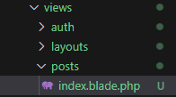

2. Edit the Default Routing
Configure the default routing after the user registers or logs in. We will use an index.blade.php instead of the home.blade.php.
PATH: backend>resources>views
PATH: backend>resources>views>posts>index.blade.php
EXPECTED OUTPUT:
PATH: backend>resources>views>posts>index.blade.php
@extends('layouts.app')
@section('title', 'Home')
@section('content')
<div style="margin-top: 100px">
<h2 class="text-muted text-center">No posts yet.</h2>
<p class="text-center">
<a href="#" class="text-decoration-none">Create a new post</a>
</p>
</div>
@endsection
PATH: backend>app>Http>Controllers>HomeController.php
public function index(){
return view('posts.index');
}